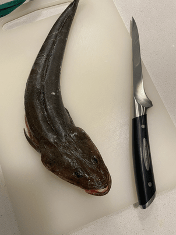
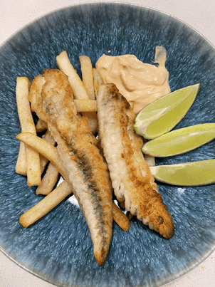

Flathead Fish & Chips - The best fish for fish & chips?


Anyone who lives in Sydney that has ever gone fishing knows that Flathead is the fish you want to catch
This is the last flathead I caught & how I cooked it!
Highly sort after for recreational fishing and fish & chips enthusiasts - there is not a better choice for Fish & chips
Sure there are cheaper more available options, but if you can catch a Flathead this is the best Fish & Chips you can have..
Ingredients
- One flathead [Freshly Caught]
- Plain flour
- Vegetable oil
- Frozen chips
- Tartar sauce
- One Lime/Lemon
Instructions
- There is no easier fish to fillet than flathead - I will spare you the details but it's so easy
- Put those chips straight in the oven - make sure you follow the directions
- Lightly flour those fillets so they evenly coated
- Get that oil hot and listen to that sizzle when the fish hits the pan
- When that fish is looking golden brown on both side get ready to plate!
- Serve that flathead + chips with some limes & tartar sauce